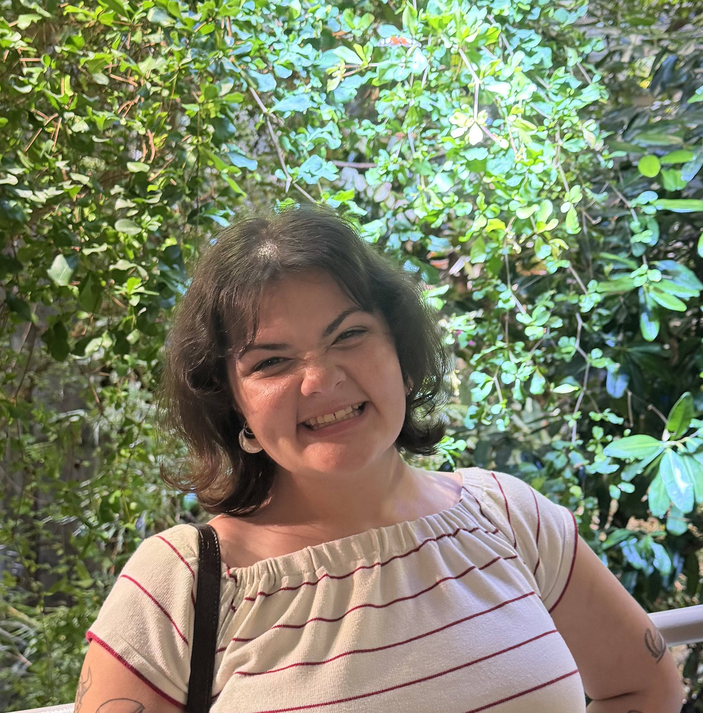

I'm a Bay Area-based artist and Studio Art major at San José State University. I am a transfer student from Diablo Valley College who primarily works with drawing and illustration. My work focuses on people, fashion, and small moments from everyday life, often combining exaggerated human forms with fantastical elements. I am influenced by people, movies, music, and fashion, which inspire the characters and situations in my work. Alongside illustration, I am currently exploring photography and digital media as ways to experiment with different approaches to my art.
My work explores people, fashion, and small, cute moments from everyday life. I primarily create illustrations and drawings, while also experimenting with photography and digital media. I am interested in exaggerating the human body and combining realistic elements with fantastical ones. Through this, I like to create figures that feel familiar but also slightly unreal or dreamlike. People, movies, and music are some of my biggest influences. I often find inspiration in the way people dress, move, interact with each other, and express themselves. I enjoy taking ordinary moments and turning them into something more imaginative through my artwork. Fashion is also an important part of my work because clothing can change the personality and feeling of a character. Recently, I have been exploring photography and digital media alongside my illustrations. I am interested in seeing how different mediums can change the way I represent people and moments. I want viewers to notice the exaggerated forms and fantastical elements in my work while still being able to connect with the people or situations I create. Overall, I am interested in making artwork that feels playful, expressive, and visually interesting.
Grace Barnacal gbarnacals@gmail.com @thewayofthe_world_ Future portfolio link Education: San Jose State, Studio Art (2027) Exhibitions: 2021 “Faerie ” photography displayed The Sunvalley Mall, Pleasant Hill, Ca